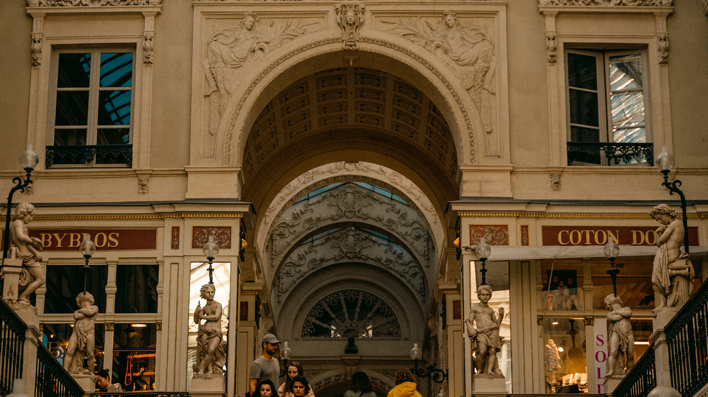

Nantes
Le cœur de la clientèle : actifs du centre-ville, habitants de Decré, Graslin et de l'île Feydeau. La plupart viennent à pied ou en tramway. Les rendez-vous se concentrent sur la fin de journée et le samedi matin.
On reçoit rue de Verdun, dans le quartier Decré, à dix minutes à pied de la place Royale. Les habitués viennent surtout de Nantes centre, mais aussi de Saint-Herblain à l'ouest et d'Orvault au nord.
Le salon est installé entre la place Graslin et le quartier Decré, l'un des angles vivants du centre de Nantes. Beaucoup de bureaux autour, quelques boutiques anciennes, et un passage régulier le samedi.

Hôtel Dieu (ligne 1) ou Commerce (lignes 1, 2, 3).
Parking Decré–Bouffay à 4 minutes à pied. Stationnement payant en surface.
Station Bicloo place Royale et rue Crébillon, à deux minutes du salon.
La majorité des rendez-vous viennent du centre, mais le salon accueille aussi régulièrement des habitués de Saint-Herblain et d'Orvault, souvent au retour du travail ou avant un événement.
Le cœur de la clientèle : actifs du centre-ville, habitants de Decré, Graslin et de l'île Feydeau. La plupart viennent à pied ou en tramway. Les rendez-vous se concentrent sur la fin de journée et le samedi matin.
Une clientèle qui descend en tramway depuis la ligne 1, ou en voiture en stationnant à Decré. Beaucoup viennent pour la barbe : la taille à la cire et le rasage à la lame se font moins facilement à l'ouest.
Des habitués pour les rendez-vous coupe + barbe en fin de semaine, et des familles pour la coupe des enfants. Le mariage d'avril dernier réunissait cinq hommes venus d'Orvault et de La Chapelle-sur-Erdre.
Réservation en ligne, ouverte 24 h sur 24. Téléphone disponible aux horaires d'ouverture.
Prendre rendez-vous